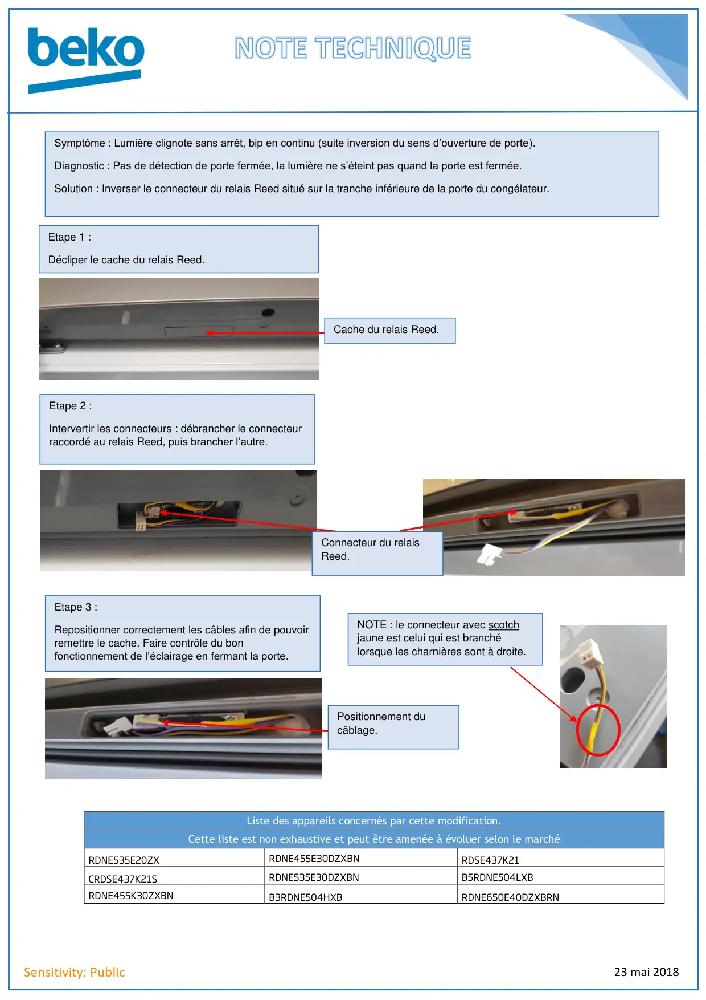

23 mai 2018Sensitivity: PublicListe des appareils concernés par cette modification.Cette liste est non exhaustive et peut être amenée à évoluer selon le marchéRDNE535E20ZXRDNE455E30DZXBNRDSE437K21CRDSE437K21SRDNE535E30DZXBNB5RDNE504LXBRDNE455K30ZXBNB3RDNE504HXBRDNE650E40DZXBRNSymptôme : Lumière clignote sans arrêt, bip en continu (suite inversion du sens d’ouverture de porte).Diagnostic : Pas de détection de porte fermée, la lumière ne s’éteint pas quand la porte est fermée.Solution : Inverser le connecteur du relais Reed situé sur la tranche inférieure de la porte du congélateur.Etape 1 :Décliper le cache du relais Reed.Cache du relais Reed.Etape 2 :Intervertir les connecteurs : débrancher le connecteurraccordé au relais Reed, puis brancher l’autre.Etape 3 :Repositionner correctement les câbles afin de pouvoirremettre le cache. Faire contrôle du bonfonctionnement de l’éclairage en fermant la porte.Positionnement ducâblage.NOTE : le connecteur avec scotchjaune est celui qui est branchélorsque les charnières sont à droite.Connecteur du relaisReed.
1 / 1